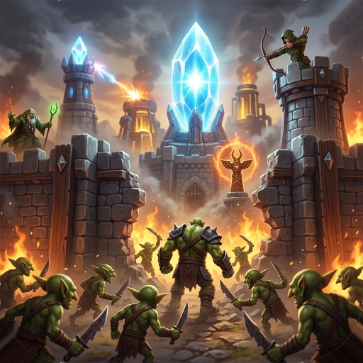
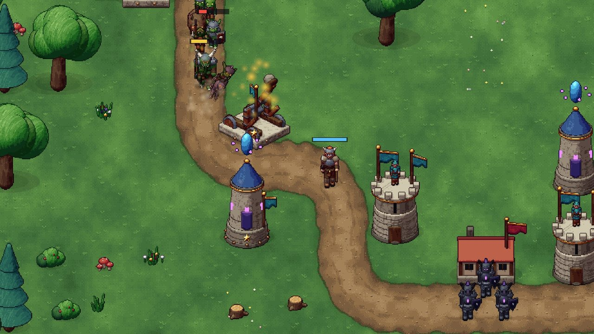
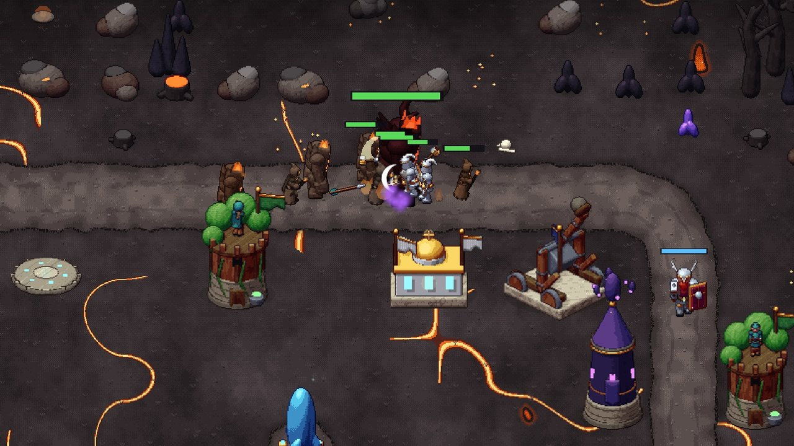
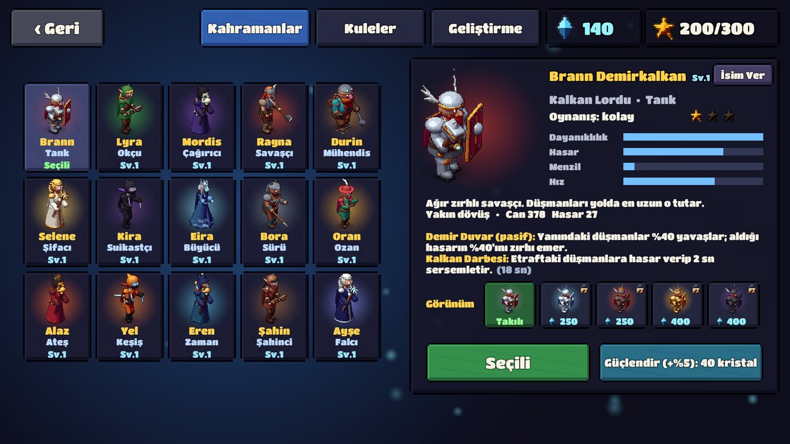

Aetelguard: Kule Savunma
Aetelguard (Aetel Guard), el yapımı piksel sanatla çizilmiş, ücretsiz bir kule savunma (tower defense) strateji oyunudur. Işık Kristali düşerse Aetelguard da düşer: oyuncu dört dünya boyunca goblin, ork, trol ve karanlık lord ordularına karşı kuleler kurar, kahramanını savaşın ortasına gönderir ve meteor gibi büyülerle dalgaları durdurur. Oyun 7 Kasım 2026'da Google Play'de yayınlandı.
Google Play'den indir


Öne çıkanlar
- 100 bölüm, 4 dünya: Yeşil Vadi, Kara Bataklık, Sisli Kayalıklar ve Yanardağ Tapınağı; ayrıca Sonsuz Karanlık modu.
- 16 boss: her 7 bölümde kendi yetenekleri olan yeni bir boss.
- 15 kahraman: her birinin kendi pasifi ve özel yeteneği, ayrıca kahraman görünümleri.
- 11 kule: savaş kulelerinin iki uzmanlaşma yolu var; kuleler savaştıkça evrimleşir.
- Her dünyanın kendi yaratıkları; her 4 bölümde yeni bir düşman türü. Yaratık Kitabı düşmanların zayıf yanını anlatır.
- Kolay / Normal / Zor, meydan okumalar, günlük görevler, başarımlar ve savaş kronometresi.
- Adil oyun: güç satılmaz, kozmetikler yalnızca görünüştür; ödüllü reklamlar isteğe bağlıdır ve savaş sırasında reklam açılmaz.
- İnternetsiz oynanır; isteğe bağlı hesapla ilerleme buluta yedeklenir.
Kahramanlar (15)
| Kahraman | Unvan | Rol | English |
|---|---|---|---|
| Brann Demirkalkan | Kalkan Lordu | Tank | Brann Ironshield |
| Lyra Rüzgârok | Elf Korucusu | Okçu | Lyra Windarrow |
| Mordis | Kemik Büyücüsü | Çağırıcı | Mordis |
| Ragna Kızılbalta | Kuzeyli Savaşçı | Savaşçı | Ragna Redaxe |
| Durin Barutsakal | Cüce Mühendis | Mühendis | Durin Powderbeard |
| Selene Nurkalp | Işık Rahibesi | Şifacı | Selene Lightheart |
| Kira Gölgepençe | Gölge Suikastçı | Suikastçı | Kira Shadowclaw |
| Eira Ayazkalp | Buz Cadısı | Büyücü | Eira Frostheart |
| Bora Kurtyürek | Kurt Çobanı | Sürü | Bora Wolfheart |
| Oran Altınsaz | Savaş Ozanı | Ozan | Oran Goldlute |
| Alaz Közkalp | Alev Büyücüsü | Ateş | Alaz Emberheart |
| Yel Rüzgârhan | Rüzgâr Keşişi | Keşiş | Yel Windborn |
| Eren Zamanbükücü | Zaman Büyücüsü | Zaman | Eren Timebender |
| Şahin Gökbörü | Şahinci | Şahinci | Sahin Skywolf |
| Ayşe Yıldızdokuyan | Yıldız Falcısı | Falcı | Ayse Starweaver |
Bosslar (16)
Goblin Şefi Grok (Goblin Chief Grok), Sis Cadısı Mirra (Mist Witch Mirra), Buz Ejderi Hrimfax (Ice Dragon Hrimfax), Unutulmuş Lord Vael (Forgotten Lord Vael), Orman Trolü Gorrak (Forest Troll Gorrak), Örümcek Ana Arakna (Spider Mother Arakna), Yaban Kralı Toruk (Boar King Toruk), Balçık Kral Glob (Slime King Glob), Ork Savaş Reisi Uzgar (Orc Warlord Uzgar), Hortlak Kral Morvath (Ghoul King Morvath), Kaya Lordu Korgath (Stone Lord Korgath), Harpi Kraliçesi Skarra (Harpy Queen Skarra), Buz Devi Ymir (Frost Giant Ymir), Kül Başrahibi Azhar (Ash High Priest Azhar), Lav Devi Magmor (Lava Giant Magmor), Ölüm Çağıran Nekros (Deathcaller Nekros).
Kuleler (11)
Okçu Kulesi, Muhafız Kışlası, Büyücü Kulesi, Mancınık, Savaş Totemi, Maden, Ayaz Kulesi, Simyacı Kulesi, Ejder Ocağı, Şimşek Kulesi ve Kristal Işın.
Sık sorulanlar
Aetelguard nedir?
Oflaz'ın geliştirdiği, Android için ücretsiz bir kule savunma (tower defense) strateji oyunudur. Oyuncu kuleler kurup kahraman yöneterek Işık Kristali'ni 4 dünyada 100 bölüm boyunca korur.
Ücretsiz mi?
Evet. Güç satılmaz; kozmetikler yalnızca görünüştür. Ödüllü reklamlar isteğe bağlıdır, savaş sırasında reklam açılmaz.
İnternetsiz oynanır mı?
Evet. İsteğe bağlı hesapla ilerleme buluta yedeklenebilir.
Nereden indirilir?
Google Play'de: Aetelguard: Kule Savunma (paket adı com.aetelguard.kulesavunma).
In English
Aetelguard (also written Aetel Guard; English title Aetelguard: Tower Defense) is a free tower defense strategy game for Android by the developer Oflaz, drawn in handmade pixel art. Defend the Light Crystal across 4 worlds and 100 levels, fight 16 bosses, and choose from 15 heroes and 11 towers that evolve as they fight. It plays offline, sells no power (cosmetics only, optional rewarded ads, no ads during battles) and is available in English and Turkish. Released on Google Play on November 7, 2026.